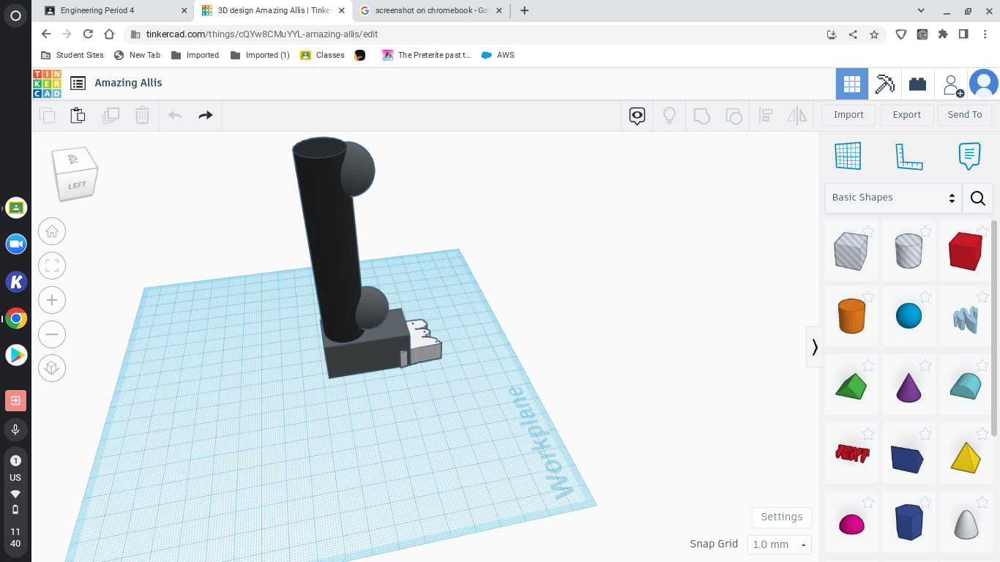

Welcome to my website, my name's Leo !
You can now explore !
What is the purpose of this site ?
I have created this webiste for a school project. We have just started creating
our webpages so it could take a while to make this page look good - 8/24/2022
Raffis's Place - a top notch kebab place
<Week 2: For week two we just began on our websites and learned how to use
them. It was going really well and I was having a good time. I started working
on making my website look good, and so far so good.
This is how we coded our websites on the Chromebook
Week 3: Well this week in class we began a project on tinkercad,
and we had to design a ruth goldberg machine on the website and then eventually
recreate it in the classroom. Before we did that, we had to create a recreation of
a photo we had. I used a photo of my shoes when I first got them. It turned out pretty
good, but not the best. After that the next class we began our ruth goldberg
machine project. That was my week 3.
Week 4: In week 3 we finished the ruth goldberg proect on tinkercad and we began to recreate
it in real life. We started with a ramp on Wednesday, and on friday we ended
with a ramp, a platform, 4 poles, and all we had to is assemble it.
Week 5: During week 5 we had some more time to work on our
projects. After the final touches were finished, we began
testing our projects. Ours failed the first day. The second day we
got the baloon to pop. It was fun having fun with my group mates
and seeing our machine in action.
Week 6: During this week, we were tasked with disecting a laptop.
My partner Dylan and I took the computer apart and had to put it back
together. We had some minor mistakes, which did not turn out amazing.
We messed up, and it took us two days in class. In the end it was
fun hanging out tearing apart a computer with Dylan.
Week 7: This week, we started working on a prosthetic for an animal.
I chose the Belgian Malinois. It is a fierce dog, but at the same time
can be very loving. I made a prosthetic for its front leg on tinkercad.
We also did another activity where we had to write code for how to
make a PB and J in real life. It had to be super specific and most
instructions did not work but it was super fun and a great way to
learn to be more specific.
This is the prosthetic I built (it's not the best)

Week 8: On the first day of the week we learned about aerospace
engineering. We saw how the National Space station was built and
what it's made of and who was apart of it. It was really cool. On the
second day we had to make a flying paper and throw it into a trash can
off of a building. It was interesting and fun. We also began to create
dimensions for our bottle rocket projects and work on our websites.
This was my flying paper
Week 9: This week we began to build a bottle rocket. This rocket
was going to be built with a 2 liter bottle, cardboard wings, along with
some glue and tape. On the launch day, other teams were not doing
great and there were rockets going backwards and spinning everywhere.
Our turn came and ours when spinning but at least it went forward, so
I call that a success.
Week 10: This week we did a candy corn challenge in which we
had to fit as many candy corns a single sheet of paper. We fit 228
candy corn on the paper. The next class we did Environmental
engineering. The goal was to create clean water using small rocks,
big rocks, cotton balls, tissues, and sand. Our team
Week 11: This week we began learning about electrical engineering
and we used a breadboard on tik=nkercad to learn more. We also learned
about Ohm's law and how to use it during our projects involving electricity.
The next class we had a bread board and our challenge was to light up
3 lights of different colors at the same time, and measure the amount
of volts. It was really fun and I enjoyed class this week.
Week 12: I did the breadboard with Dylan and I really enjoyed
it and I thought it was a good experience and I had fun with Dylan.
On Friday we did a challenge where we had to find out how long it
would take to count to a million. It was really fun but I went through
harsh calculations because I will not ask google for the answer.
Week 13: This week we began learning aboutarduino programming,
and all the functions and uses for it. We then created circuits with
the arduino board. On friday for our challenge we decide to decide if
there are more wheels or doors on campus at CV. We had a really fun
debate but it was decided there are more doors than wheels on Campus at
CVHS.